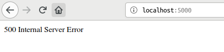

Caveman kills ruby on rails - Chapter 11
Meta info
対象読者
- Cavemanにおける例外処理を修めたいCLer
Introduction
本稿は原著の各章をCommon Lispに翻訳するシリーズの第11章である。 本章ではCavemanにおける例外処理を修めていく。
Strong parameter
CavemanではデフォルトでRailsでいうstrong-parameter相当の機能がサポートされている。 Cavemanはマイクロウェブフレームワークであるningleを拡張する形で作られているライブラリなのだが、このNINGLEのほうはstrong-parameterがサポートされていない。 Cavemanユーザがこの下層たるNINGLEの仕様に出くわすのは、これまで見てきた通り名前付きpostメソッドを自作する場合に限られるだろう。
Customizing error page
CavemanではHTTP status codeをある種の例外として投げられる。
基本的な使い方は単にCAVEMAN2.EXCEPTION:THROW-CODEにHTTP status codeを整数で渡してあげればいいだけだ。
(throw-code 500)クライアントには通常プレーンテクストが:CONTENT-TYPE “text/html”のボディとして送られるようだ。

この投げられた例外に特別な処理を施したい場合、通常総称関数CAVEMAN2.APP:ON-EXCEPTIONにメソッドを追加することで行うことができる。
CAVEMAN2:MAKE-PROJECTでプロジェクトのスケルトンを作っているなら、404へスペシャライズドされたメソッドがもう定義されているはずだ。
デフォルトの404は以下のようなものとなる。

THROW-CODEは特別なこだわりがない場合には大変便利なものなのだが、そこから外れると厄介になる。
たとえばstatus-code 405 Method not allowedをサポートしようとした場合などがそうだ。 405はHTTPの仕様ではヘッダにallowヘッダを追加し、受け入れられるメソッドのリストを追加しなければならない（must）
さて、Cavemanでこれを実現するにはどうするのが正攻法なのか。
まず、これらの例外はCommon Lispのコンディションシステムとして実装されている。
よってCAVEMAN2:HTTP-EXCEPTIONを継承するかたちで独自のコンディションを定義することから始める。
(define-condition method-not-allowed(caveman2.exception:http-exception)
((allow :initarg :allow :reader allow)
(method :initarg :method :reader not-allowed)))次に定義されたコンディションに特化したCAVEMAN2.APP:ON-EXCEPTIONを定義する。
(defmethod on-exception((app <web>) (code method-not-allowed))
(setf (getf (lack.response:response-headers ningle:*response*):allow)(allow code))
(format nil "Unknown method ~S"(not-allowed code)))ヘッダの追加をSETFで行ってある点要注目。
使う場合は以下のようにする。
(let((caveman2.exception:*exception-class* 'method-not-allowed))
(throw-code 405 :allow "put get" :method "post"))以上が正攻法の場合、だ。 正直、僕はこのアプローチが好きではない。 なぜか。
まずひとつめに、独自の引数を渡したいといった込み入った案件についてはアンドキュメンテッドである。
その上でソースコードに潜り込むとして、正攻法アプローチは学習負荷が高い実装となっている。
METHOD-NOT-ALLOWEDの実装にあたりユーザは、THROW-CODE、HTTP-EXCEPTION、*EXCEPTION-CLASS*といったシンボルについて知らねばならない。
ところでTHROW-CODEの中身は実は単なるCL:ERRORだ。
なら、THROW-CODEというブラックボックスを提供するよりは、単にHTTP-EXCEPIONコンディションクラスを公開するほうが良くはないだろうか。
HTTP-EXCEPTIONコンディションクラスを公開するなら、ユーザはそのスロットやアクセサについても知る必要が出てくるだろう。
結果覚えることは増えるかもしれない。
だが、それは慣れ親しんだCommon Lisp標準のコンディションシステムだ。
それも一箇所、HTTP-EXCEPTIONの定義を見れば事足りる。
どこに何が書いてあるかまだ知らないソースコードのあっちこっちを飛びながら学習する必要がない。
この場合使い方は以下のようになる。
(error 'method-not-allowed :method "post" :allow "put get" :code 405)正攻法のCL:LETで束縛する呼び方よりむしろ短く書けている。
THROW-CODEというシンボルについても知らなくて済む。
ふたつめに、正攻法のアプローチならON-EXCEPTIONの仕様についても知らなければならない。
ここで言うON-EXCEPTIONの仕様とは、単に返り値に何を返せば良いかだけでなく、ON-EXCEPTIONがCavemanによりどのように呼び出されているかについても含む。
ON-EXCEPTIONは第二引数にコンディションオブジェクトを渡す形で呼び出されるのだが、それはCavemanのソースコードに潜って初めて分かることだ。
またヘッダを追加したいならLACK.RESPONSE:RESPONSE-HEADERSとNINGLE:*RESPONSE*についても知らなければならなくなる。
もしかしたらON-EXCEPTIONはLACK互換の返り値を返せばいいように設計されているのでLACK.RESPONSE:RESPONSE-HEADERSやNINGLE:*RESPONSE*については知らなくとも良いという反論があるかもしれない。
例えば上述のメソッドは以下のようにしても良い。
(defmethod on-exception((app <web>) (code method-not-allowed))
`(,(caveman2.exception:exception-code code)
(:allow ,(allow code))
(,(format nil "Unknown method ~S"(not-allowed code)))))そうなのだ。
結局これは上述のERROR呼び出しを以下のように書くのと等価なのだ。
`(405 (:allow "put get")(,(format nil "Unknown method ~S""post")))コードは更に短くなり、我々はいまやON-EXCEPTIONについても知らなくて良くなった。
学習コストをかけて、長いコードを書いて、その結果得られるものはなんだろうか。
今の所ぼくには、WHENやUNLESSで囲んでアーリーリターンの形で例外を投げられるので、コードのネストが深くならないというような点しか思いつかない。
それこそが大事なのかもしれないが。
とはいえこれは「込み入ったことをする場合」の話だ。 エラー画面をカスタマイズする気がないなら大変便利に使えると思う。
ところで本章のテーマはエラーページのカスタマイズだが、込み入ったことは行わないので正攻法のアプローチを取っていくこととする。
Error templates
templates/layouts/error.html
エラー用のレイアウトは以下の通り。
<!DOCTYPE html>
<html>
<head>
<meta charset="utf-8">
<title>
{% block title %}Title{% endblock %}
</title>
<link rel="stylesheet" media="all" href="/css/app.css">
</head>
<body>
<div id="container">
<header>
<img src="/images/lisplogo.svg" alt="Image alt text" width="800" height="400">
<nav class="menubar">
<a href="/">TOP</a>
</nav>
</header>
<main>
{% block main %}Main content here{% endblock %}
</main>
<footer>
{% include "shared/footer.html" %}
</footer>
</div>
</body>
</html>404 not found.
on-exception
(defmethod on-exception ((app <web>) (code (eql 404)))
(declare (ignore app))
(render "errors/not-found.html"))templates/errors/not-found.html
{% extends "layouts/error.html" %}
{% block title %} {% lisp (title! "Not Found") %} {% endblock %}
{% block main %}
<h1>404 Not Found</h1>
{% endblock %}400 Bad request
on-exception
(defmethod on-exception ((app <web>) (code (eql status-code:+bad-request+)))
(declare (ignore app))
(render "errors/bad-request.html" `(:alert ,(flash-gethash :alert ningle:*session*))))templates/errors/bad-request.html
{% extends "layouts/error.html" %}
{% block title %}{% lisp (title! "Bad Request") %}{% endblock %}
{% block main %}
<h1>400 {% lisp (title!) %}</h1>
{% if alert %}
<p class="notice">{{alert}}</p>
{% endif %}
{% endblock %}後はだいたい同じなので省略。

Summary
- Mass Assignment脆弱性への対策であるストロングパラメタはデフォルトで有効です。
- 独自のエラーページを作るには総称関数
ON-EXCEPTIONにメソッドを追加します。